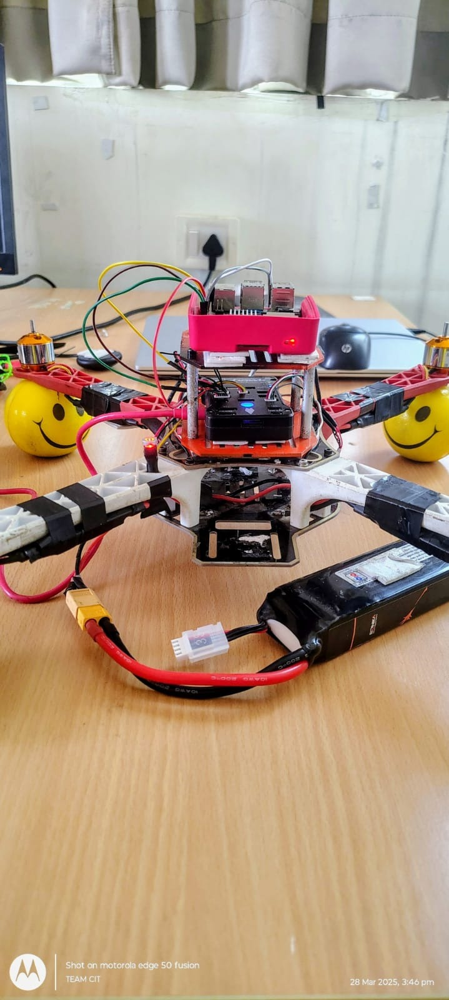
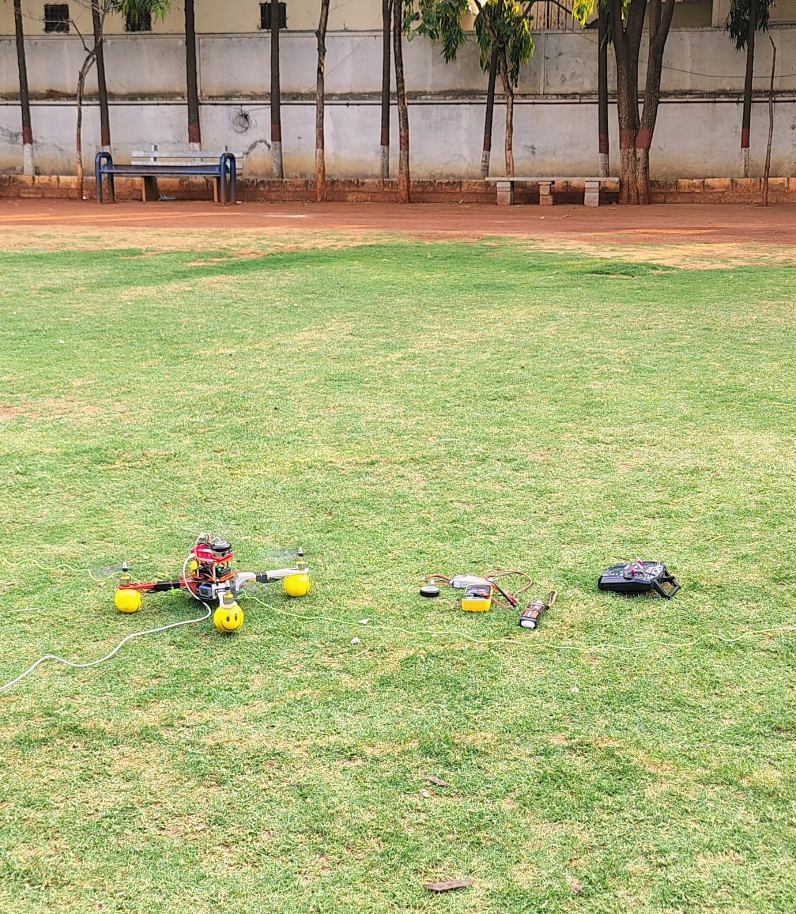
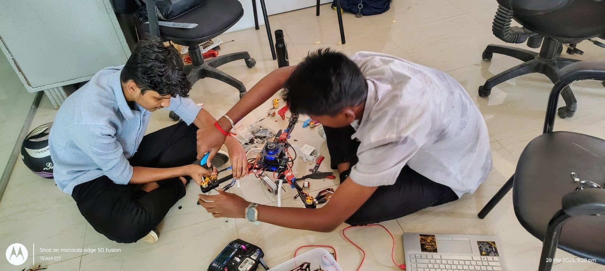
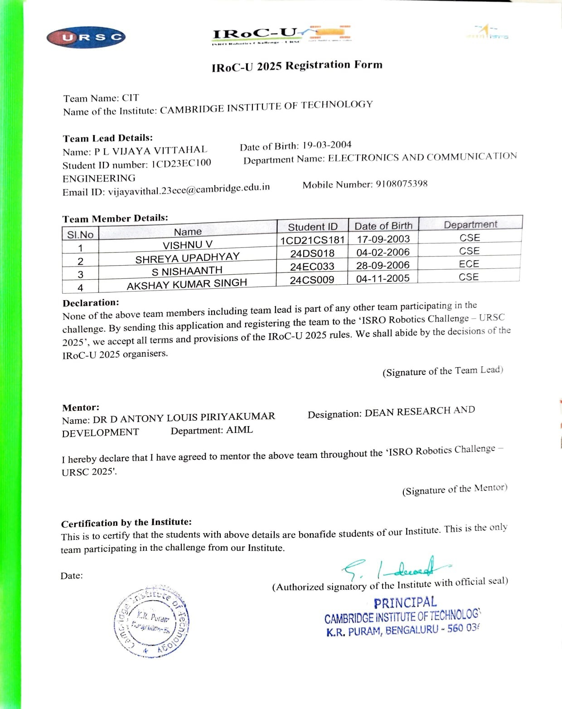
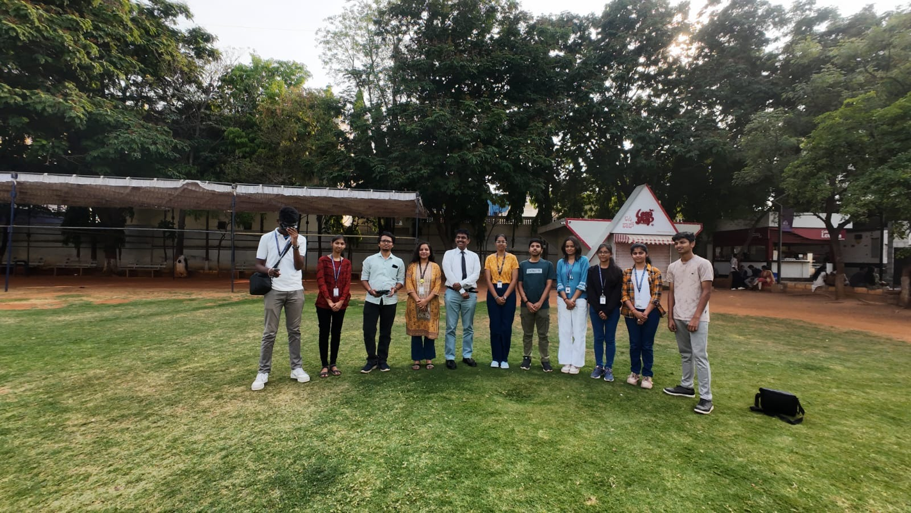

GPS-DENIED AUTONOMOUS DRONE
Building and integrating a UAV platform for autonomous navigation without relying on conventional GPS guidance.
NAVIGATION WITHOUT GPS.
This project explores autonomous UAV navigation in environments where conventional GPS-based positioning cannot be relied upon.
The system combines onboard sensing, embedded computing and robotic software to build a platform capable of perceiving its surroundings and supporting autonomous navigation.
GPS IS NOT ALWAYS AN OPTION.
Autonomous aerial navigation becomes significantly harder when GPS is unavailable, unreliable or intentionally denied.
The vehicle still needs information about its surroundings and motion in order to make meaningful navigation decisions.
Cameras and onboard sensors provide environmental and motion information.
Onboard computing processes sensor information for robotic perception.
Processed information contributes to autonomous navigation decisions.
Navigation outputs are integrated with the UAV flight-control system.
UAV PLATFORM
Airframe and flight hardware forming the physical autonomous platform.
FLIGHT CONTROL
Flight-control hardware responsible for stabilisation and vehicle control.
RASPBERRY PI 5
Onboard computing platform used for higher-level robotic processing.
INTEL REALSENSE D435
Depth camera used as part of the onboard perception system.
MAKING THE HARDWARE THINK.
The onboard computing layer is used to process sensor information and connect perception with autonomous robotic behaviour.
I WORKED WHERE HARDWARE MEETS AUTONOMY.
My work focused primarily on the hardware side of the autonomous UAV and its integration with the onboard computing and sensing systems.
GPS-DENIED NAVIGATION
Designing a system that can operate without depending entirely on conventional GPS positioning.
SENSOR INTEGRATION
Bringing multiple sensing systems together while maintaining reliable data flow.
REAL-TIME COMPUTING
Processing perception and navigation information within the constraints of an airborne platform.
SYSTEM TESTING
Hardware and software integration required repeated testing, debugging and iteration.
FROM AIRFRAME TO AUTONOMY.
The project moved from individual hardware components into complete UAV platforms designed for autonomous navigation in GPS-denied environments.

BUILDING THE AIRFRAME.
The project involved assembling and integrating UAV platforms around the requirements of autonomous navigation.
I worked directly with the physical airframe, motors, ESCs, flight controller, power system, onboard computing and sensing hardware.

TESTING THE SYSTEM.
Hardware was taken beyond the workbench and tested in real outdoor environments.
Field testing helped expose practical issues around stability, power delivery, wiring, thrust and system integration that were difficult to identify during bench testing alone.

BUILDING UNDER PRESSURE.
A large part of the work happened away from the final demonstration — assembling, debugging, rewiring and repeatedly testing the platform.
My contribution focused primarily on UAV assembly, hardware integration, debugging and system-level engineering.

BUILT FOR IROC-U 2025.
The platform was developed as part of the ISRO Robotics Challenge — URSC 2025.
The team progressed through the first stage of the challenge, clearing Round 1 with the autonomous UAV platform.

FROM A UAV TO AN AUTONOMOUS SYSTEM.
The project gave me hands-on experience integrating aerial hardware, onboard perception and robotic software into a single autonomous platform.